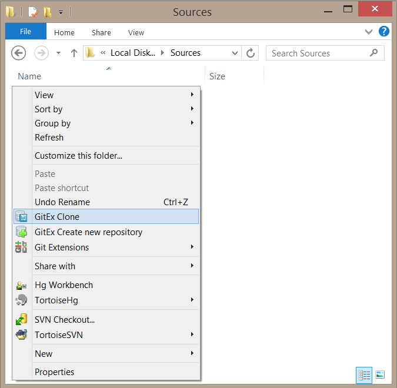
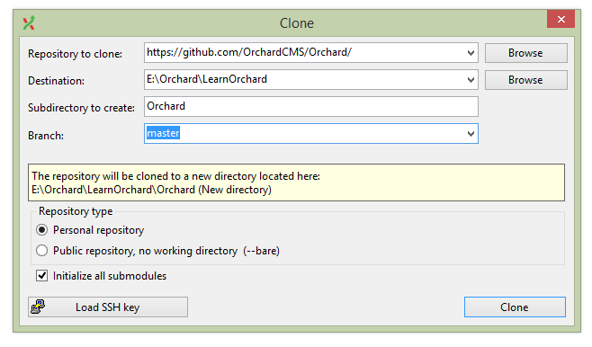
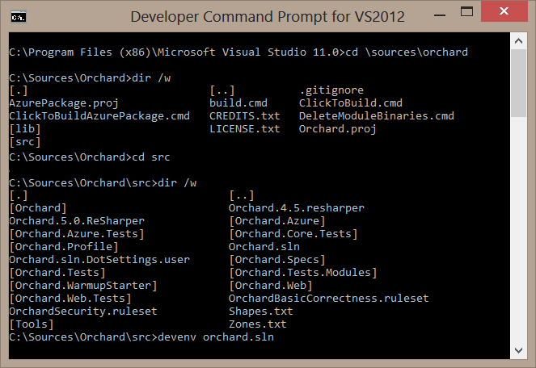
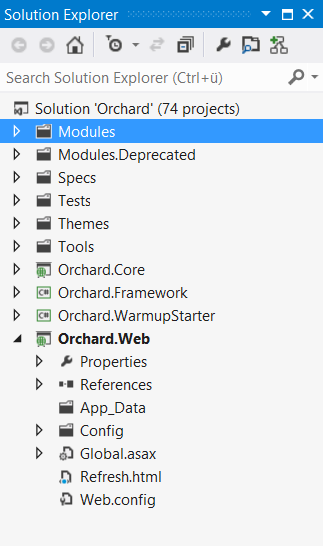
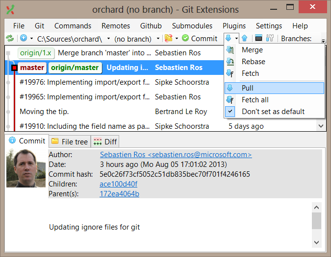

Enlisting in the Source Code Using Git and Git Extensions
The Orchard project source code is hosted on GitHub and can be accessed using a Git client. This page explains how to set-up your development environment. This setup allows you to work on the project as a developer, fix issues, build your own site from it or build modules.
When using a distributed source control system such as Git, it's important to understand that the latest check-in on the GitHub repository is not necessarily the one you want to download or sync to as it may be a different branch than the master branch.
When synchronizing your enlistment, you will probably want to sync to the master branch. This is the latest stable release. Branches are covered in more detail here.
For more information about Git, please read Git Basics, Basic Branching and Merging or Git Extensions user manual.
Step 1: Install Git Extensions
Git Extensions is one of many Git clients available. You can access the repository using any Git client. This tutorial explains how to clone the repo with Git Extensions.
Download the latest release directly from GitHub. You have two main options, the Setup.msi and the SetupComplete.msi. You should get the SetupComplete.msi version which comes with some useful extra utilities bundled with it.
Open the msi when it has downloaded. Follow the steps to complete the installation:
- Installation Scope Install for all users unless you don't have administrator privileges.
- Required Software Select
MsysGitandKDiff3. You must have a a version ofMsysGitinstalled for Git Extensions to function properly.KDiffis great for comparing the differences between two files or folders. You can optionally installWindows Credential Store for Git. - Destination Folder Accept the default or select your preferred destination.
- Custom Setup The defaults are fine.
- Select SSH Client Choose PuTTY.
When installation has completed you will find that you have extra Git Ext options when you right click in Windows Explorer:

Step 2: Enlist in the Source Code Using Git Extensions
In Windows Explorer, navigate to the local directory where you want your copy of the source code to live, right-click and choose GitEx Clone.

In the clone window you have four fields to fill out.
- In the
Repository to clonefield type https://github.com/OrchardCMS/Orchard/. - The
Destinationfield will already be filled out with your current directory. - When you paste the repository url it will also fill out the
Subdirectory to createfield. If you want to change this to a project name you can. - Selecting the
Branchdropdown will show you all of the current branches. This is loaded from GitHub so it may take a few seconds to load the list. For the latest stable branch selectmaster.
The rest of the settings can be left as-is. Click Clone.

You will not be prompted for your GitHub login and password unless you try to commit changes.
Step 3: Building and Running the Orchard Source
You can build and run Orchard either from the Visual Studio, or using a command-line batch file.
Using Visual Studio
Open Orchard.sln from the Git enlistment directory, in ./src. For information on the structure of the Orchard solution, see the source code organization page of this website.

Hit F5 to build and run the application.

Without Visual Studio
Build the application from the command-line following the instructions found here: Building and deploying Orchard from a source code drop. You may use IIS or IIS Express to run the application.
Everyday Git Extensions Use
The part of Git Extensions you're going to use the most is the Repository Explorer (right-click on the Git enlistment directory from the Windows Explorer to find it, it's called GitEx Browse).
For example, to get the latest changes from GitHub, just click Pull.
The repository explorer gives you a view of all the branching and merging that has been going on on the server. You can examine each change, read its description and view diffs. You can also right-click a change and update your local repository to it by clicking Checkout revision.

You can also filter by branch, which is useful for example if you're only interested in the more stable master branch. Development work is done in both the 1.9.x and dev branches.
Viewing the Source Code Without Enlisting
If you don't want to use Git you can still download the source code for the project. You can download a .zip file of the source code but this means you don't get the advantages of being able to easily clone and update.
Branches
Learn more about the branches on the contributing patches page.